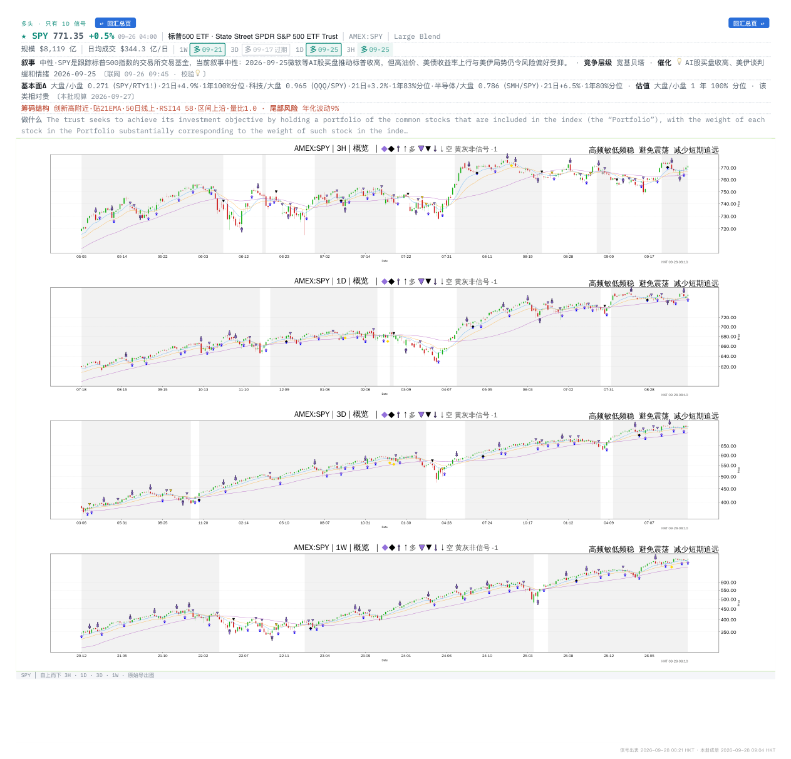
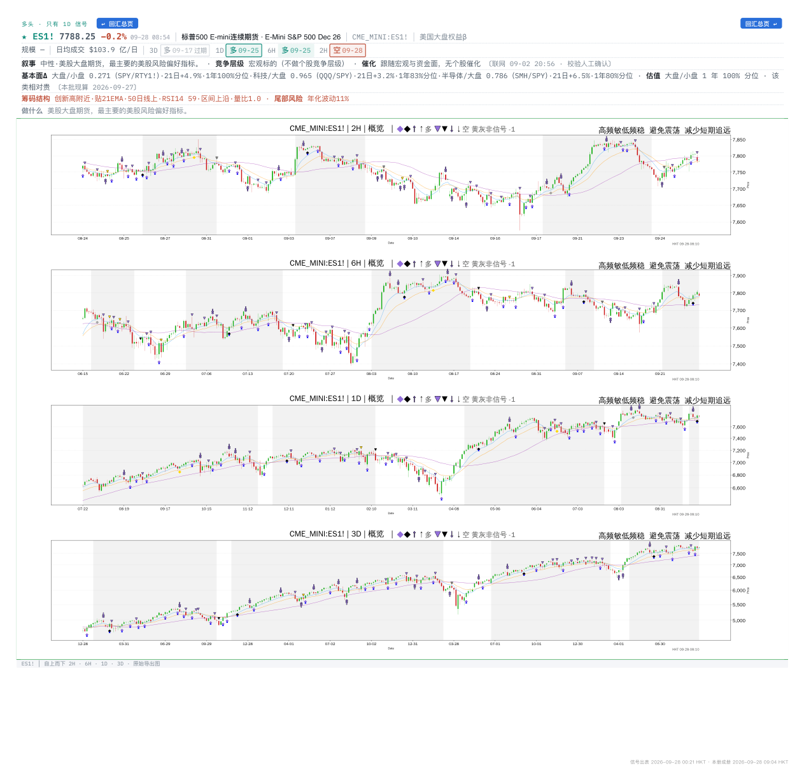
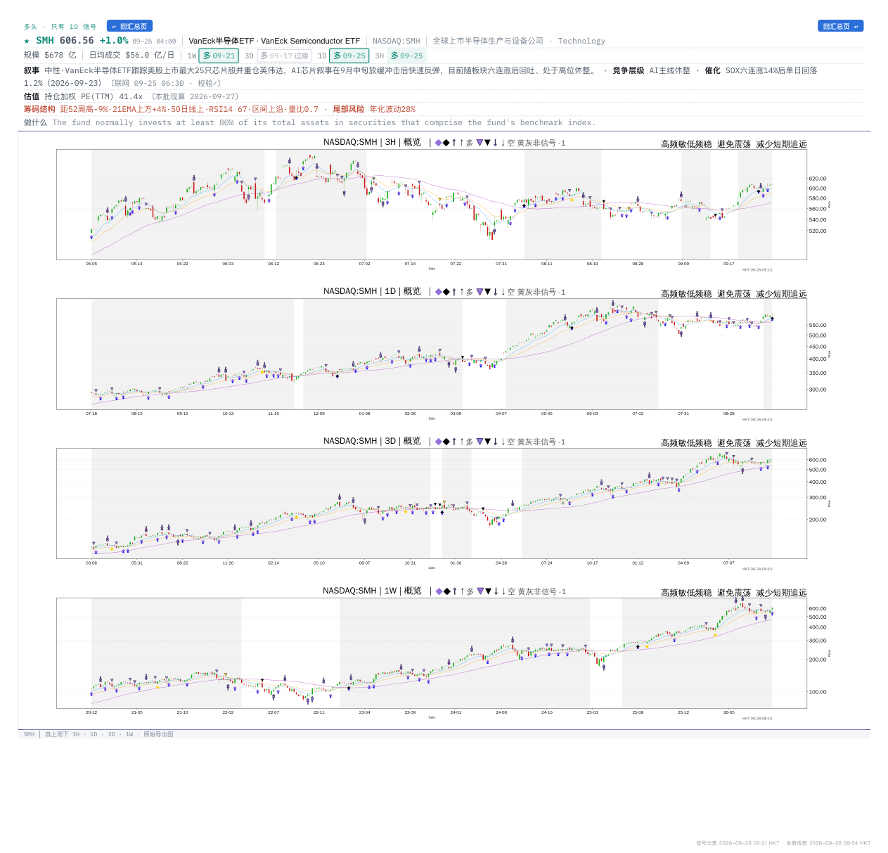
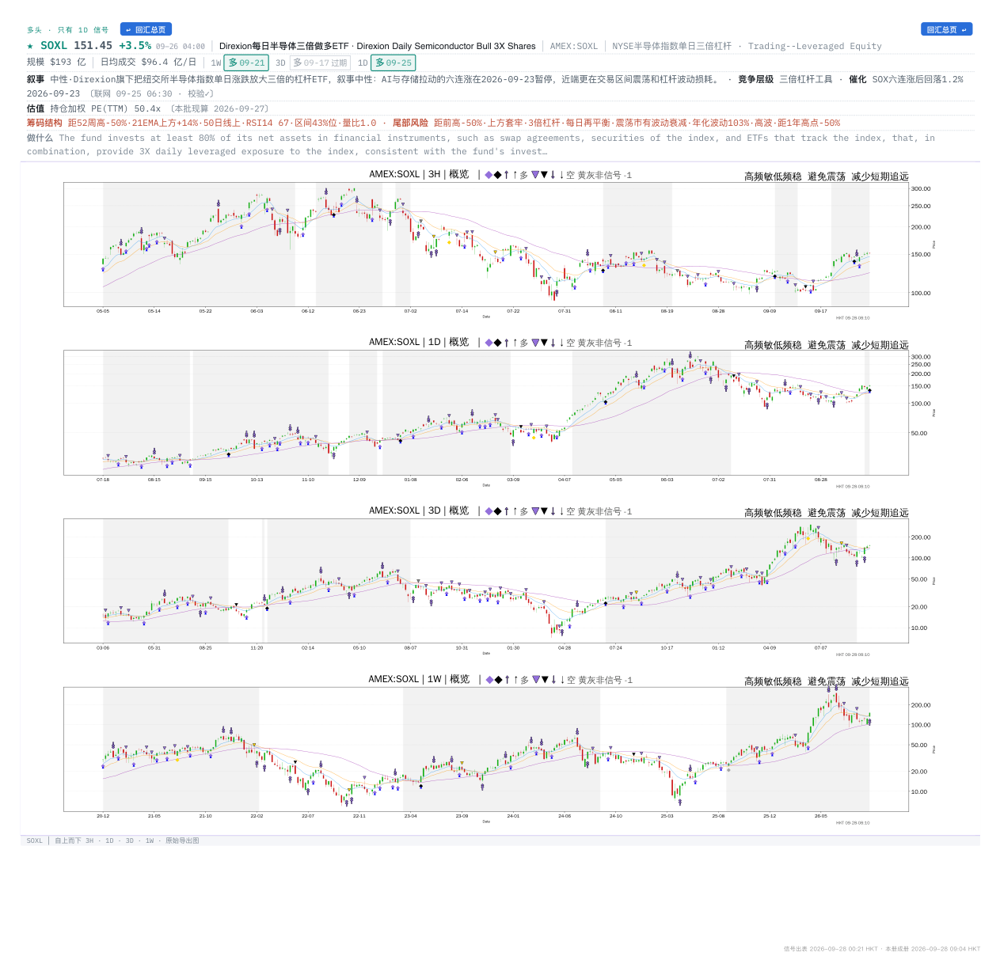
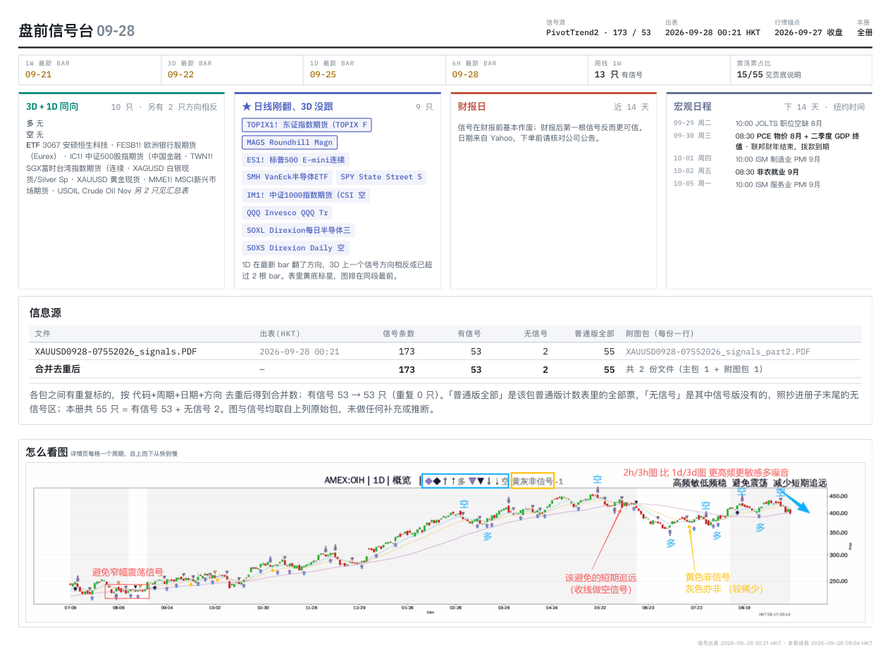

24 小时精选09-28 10:30 北京时间
过去 24 小时 1 本册 · 候选 19 只 · 导读 12 只。只收「3D+1D 同向」「★ 日线刚翻」两类。临近财报的照常列出，单独标红——信号在财报前基本作废，看不看由你定。
宏观日程（纽约时间）
09-29 周二 10:00JOLTS 职位空缺 8月
09-30 周三 08:30PCE 物价 8月 + 二季度 GDP 终值
09-30 周三 联邦财年结束，拨款到期
10-01 周四 10:00ISM 制造业 PMI 9月
今日导读先 3D+1D 都新鲜，再 ★ 日线刚翻；转折类按 RSI14 极端度、延续类按「跑输后翻多」 · 点图放大
宏观FESB1!欧洲银行股期货（Eurex）多638.65 +0.3%今天新触发
3D 与 1D 同向多，两个周期都是最新一根 K 线 · 最新 K 线刚触发：3D/1D/6H · 21 日相对基准 -2.1%，跑输后翻多 · RSI14 45 · 走势 震荡（ER 0.21）
3D 多 09-24 · 1D 多 09-25 · 6H 多 09-25

出自 0927 Macro 0021 bjt 第 1 页
宏观IC1!中证500股指期货（中国金融空7624.07 -2.1%今天新触发
3D 与 1D 同向空，两个周期都是最新一根 K 线 · 最新 K 线刚触发：3D/1D
3D 空 09-23 · 1D 空 09-24

出自 0927 Macro 0021 bjt 第 1 页
宏观XAUUSD黄金现货空4265.7 -1.3%今天新触发
3D 与 1D 同向空，两个周期都是最新一根 K 线 · 最新 K 线刚触发：3D/1D/2H/6H · 21 日相对基准 -5.1%，顺势 · RSI14 33 · 走势 偏趋势（ER 0.43）
3D 空 09-25 · 1D 空 09-28 · 6H 空 09-26 · 2H 空 09-28

出自 0927 Macro 0021 bjt 第 1 页
宏观TWN1!SGX富时台湾指数期货（连续多48024.6 -0.3%今天新触发
3D 与 1D 同向多，两个周期都是最新一根 K 线 · 最新 K 线刚触发：3D/1D/2H · 21 日相对基准 +2.8%，顺势 · RSI14 67 · 走势 偏震荡（ER 0.27）
3D 多 09-15 · 1D 多 09-24 · 2H 多 09-26

出自 0927 Macro 0021 bjt 第 1 页
宏观XAGUSD白银现货/Silver Sp空63.67 -1.8%今天新触发
3D 与 1D 同向空，两个周期都是最新一根 K 线 · 最新 K 线刚触发：3D/1D/6H · 21 日相对基准 -4.0%，顺势 · RSI14 42 · 走势 震荡（ER 0.16）
3D 空 09-25 · 1D 空 09-28 · 6H 空 09-26 · 2H 多 09-26

出自 0927 Macro 0021 bjt 第 1 页
宏观3067安硕恒生科技空9.09 -1.4%今天新触发
3D 与 1D 同向空，两个周期都是最新一根 K 线 · 最新 K 线刚触发：3D/1D · 21 日相对基准 -6.2%，顺势 · RSI14 34 · 走势 偏趋势（ER 0.44）
3D 空 09-25 · 1D 空 09-23

出自 0927 Macro 0021 bjt 第 1 页
宏观TOPIX1!东证指数期货（TOPIX F空66866.01 +0.8%今天新触发
日线刚翻空，3D 仍多 · 最新 K 线刚触发：1D · 21 日相对基准 +1.7%，跑赢后翻空 · RSI14 63 · 走势 震荡（ER 0.18）
3D 多 09-15 · 1D 空 09-18

出自 0927 Macro 0021 bjt 第 1 页
宏观SPYState Street S多771.35 +0.5%今天新触发
日线刚翻多，3D 没跟 · 最新 K 线刚触发：1D · 21 日相对基准 +0.0%，跑输后翻多 · RSI14 58 · 走势 震荡（ER 0.05）
3D 多 09-17 · 1D 多 09-25 · 3H 多 09-25

出自 0927 Macro 0021 bjt 第 13 页
宏观ES1!标普500 E-mini连续多7788.25 -0.2%今天新触发
日线刚翻多，3D 没跟 · 最新 K 线刚触发：1D/2H · 21 日相对基准 +0.5%，顺势 · RSI14 59 · 走势 震荡（ER 0.10）
3D 多 09-17 · 1D 多 09-25 · 6H 多 09-25 · 2H 空 09-28

出自 0927 Macro 0021 bjt 第 11 页
宏观SMHVanEck半导体ETF多606.56 +1.0%今天新触发
日线刚翻多，3D 没跟 · 最新 K 线刚触发：1D · 21 日相对基准 +6.6%，顺势 · RSI14 67 · 走势 偏震荡（ER 0.29）
3D 多 09-17 · 1D 多 09-25 · 3H 多 09-25

出自 0927 Macro 0021 bjt 第 12 页
宏观SOXLDirexion每日半导体三多151.45 +3.5%今天新触发
日线刚翻多，3D 没跟 · 最新 K 线刚触发：1D · 21 日相对基准 +28.8%，顺势 · RSI14 67 · 走势 偏震荡（ER 0.32）
3D 多 09-17 · 1D 多 09-25

出自 0927 Macro 0021 bjt 第 15 页
宏观MAGSRoundhill Magn多72.64 +0.2%今天新触发
日线刚翻多，3D 没跟 · 最新 K 线刚触发：1D/3H · 21 日相对基准 +4.2%，顺势 · RSI14 69 · 走势 偏趋势（ER 0.41）
3D 多 09-17 · 1D 多 09-25 · 3H 多 09-26

出自 0927 Macro 0021 bjt 第 1 页
全部候选按市场展开 · 同一只票只留最新一册
宏观19 只
| 代码 | 名称 | 方向 | 周期 | 现价 | 日涨跌 | RS21 | RSI14 | 财报 | 出自 · 点开归档 |
|---|---|---|---|---|---|---|---|---|---|
| FESB1! | 欧洲银行股期货（Eurex） | 多 | 3D 多 09-24 · 1D 多 09-25 · 6H 多 09-25 | 638.65 | +0.3% | RS -2.1 | RSI 45 | 0927 Macro 0021 bjt | |
| IC1! | 中证500股指期货（中国金融 | 空 | 3D 空 09-23 · 1D 空 09-24 | 7624.07 | -2.1% | 0927 Macro 0021 bjt | |||
| XAUUSD | 黄金现货 | 空 | 3D 空 09-25 · 1D 空 09-28 · 6H 空 09-26 · 2H 空 09-28 | 4265.7 | -1.3% | RS -5.1 | RSI 33 | 0927 Macro 0021 bjt | |
| TWN1! | SGX富时台湾指数期货（连续 | 多 | 3D 多 09-15 · 1D 多 09-24 · 2H 多 09-26 | 48024.6 | -0.3% | RS +2.8 | RSI 67 | 0927 Macro 0021 bjt | |
| XAGUSD | 白银现货/Silver Sp | 空 | 3D 空 09-25 · 1D 空 09-28 · 6H 空 09-26 · 2H 多 09-26 | 63.67 | -1.8% | RS -4.0 | RSI 42 | 0927 Macro 0021 bjt | |
| 3067 | 安硕恒生科技 | 空 | 3D 空 09-25 · 1D 空 09-23 | 9.09 | -1.4% | RS -6.2 | RSI 34 | 0927 Macro 0021 bjt | |
| TOPIX1! | 东证指数期货（TOPIX F | 空 | 3D 多 09-15 · 1D 空 09-18 | 66866.01 | +0.8% | RS +1.7 | RSI 63 | 0927 Macro 0021 bjt | |
| SPY | State Street S | 多 | 3D 多 09-17 · 1D 多 09-25 · 3H 多 09-25 | 771.35 | +0.5% | RS +0.0 | RSI 58 | 0927 Macro 0021 bjt | |
| ES1! | 标普500 E-mini连续 | 多 | 3D 多 09-17 · 1D 多 09-25 · 6H 多 09-25 · 2H 空 09-28 | 7788.25 | -0.2% | RS +0.5 | RSI 59 | 0927 Macro 0021 bjt | |
| SMH | VanEck半导体ETF | 多 | 3D 多 09-17 · 1D 多 09-25 · 3H 多 09-25 | 606.56 | +1.0% | RS +6.6 | RSI 67 | 0927 Macro 0021 bjt | |
| SOXL | Direxion每日半导体三 | 多 | 3D 多 09-17 · 1D 多 09-25 | 151.45 | +3.5% | RS +28.8 | RSI 67 | 0927 Macro 0021 bjt | |
| MAGS | Roundhill Magn | 多 | 3D 多 09-17 · 1D 多 09-25 · 3H 多 09-26 | 72.64 | +0.2% | RS +4.2 | RSI 69 | 0927 Macro 0021 bjt | |
| QQQ | Invesco QQQ Tr | 多 | 3D 多 09-17 · 1D 多 09-25 | 744.5 | +0.5% | RS +3.3 | RSI 69 | 0927 Macro 0021 bjt | |
| SOXS | Direxion Daily | 空 | 3D 空 09-17 · 1D 空 09-25 | 32.43 | -3.6% | RS -29.5 | RSI 31 | 0927 Macro 0021 bjt | |
| IM1! | 中证1000指数期货（CSI | 空 | 3D 多 09-15 · 1D 空 09-24 | 7570.15 | -2.3% | 0927 Macro 0021 bjt | |||
| MME1! | MSCI新兴市场期货 | 多 | 3D 多 09-18 · 1D 多 09-25 · 2H 多 09-28 | 67.98 | +1.1% | RS -1.4 | RSI 54 | 0927 Macro 0021 bjt | |
| USOIL | Crude Oil Nov | 空 | 3D 空 09-18 · 1D 空 09-25 · 6H 多 09-28 · 2H 多 09-28 | 93.03 | +0.7% | RS +1.3 | RSI 46 | 0927 Macro 0021 bjt | |
| HTI1! | 恒生科技指数期货连续合约（H | 空 | 3D 空 09-23 · 1D 空 09-22 · 2H 多空 09-25 | — | 0927 Macro 0021 bjt | ||||
| GDX | 黄金矿业ETF(VanEck | 空 | 3D 空 09-22 · 1D 空 09-23 | 92.87 | +0.6% | RS -6.8 | RSI 43 | 0927 Macro 0021 bjt |